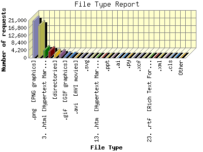

Report generated by Analog 6.0 and Report Magic 2.21
|
Web Server Statistics for "Harish Narayanan (hnarayan) - November 2007" Report generated by Analog 6.0 and Report Magic 2.21 |
The File Type Report identifies the type of information that is requested from the web site. GIF and JPG are the two types of graphic (image) files that are most commonly supported by web browsers. HTML (sometimes abbreviated HTM), ASP, and [directories] all represent actual pages. The number of image requests will almost always outnumber page requests as one page may contain several images.
This report shows all results. This report is sorted by number of requests.

| File Type | Number of requests | Number of bytes transferred | Percentage of the bytes | Percentage of the requests | |
|---|---|---|---|---|---|
| 1. | .png [PNG graphics] | 20,658 | 240.107 MB | 11.95% | 39.00% |
| 2. | .jpg [JPEG graphics] | 18,050 | 474.258 MB | 23.61% | 34.08% |
| 3. | .html [Hypertext Markup Language] | 4,264 | 66.097 MB | 3.29% | 8.05% |
| 4. | .css [Cascading Style Sheets] | 3,824 | 9.219 MB | 0.46% | 7.22% |
| 5. | [directories] | 2,301 | 8.002 MB | 0.40% | 4.34% |
| 6. | .js [JavaScript code] | 1,963 | 45.692 MB | 2.27% | 3.71% |
| 7. | .gif [GIF graphics] | 974 | 1.746 MB | 0.09% | 1.84% |
| 8. | .pdf [Adobe Portable Document Format] | 556 | 737.463 MB | 36.71% | 1.05% |
| 9. | .avi [AVI movies] | 65 | 24.078 MB | 1.20% | 0.12% |
| 10. | .mpg [MPEG movie] | 48 | 29.241 MB | 1.46% | 0.09% |
| 11. | .svg | 42 | 276.646 KB | 0.01% | 0.08% |
| 12. | .asc | 39 | 38.398 KB | 0.00% | 0.07% |
| 13. | .htm [Hypertext Markup Language] | 37 | 4.176 MB | 0.21% | 0.07% |
| 14. | .zip [Zip archives] | 29 | 200.399 MB | 9.97% | 0.06% |
| 15. | .ppt | 20 | 96.195 MB | 4.79% | 0.04% |
| 16. | [no extension] | 19 | 22.232 KB | 0.00% | 0.04% |
| 17. | .ai | 16 | 17.583 MB | 0.88% | 0.03% |
| 18. | .psd | 13 | 53.973 MB | 2.69% | 0.03% |
| 19. | .py | 11 | 156.531 KB | 0.01% | 0.02% |
| 20. | .sh | 9 | 3.423 KB | 0.00% | 0.02% |
| 21. | .xcf | 7 | 123.249 KB | 0.01% | 0.01% |
| 22. | .bz2 | 4 | 37.180 KB | 0.00% | 0.01% |
| 23. | .rtf [Rich Text Format] | 4 | 2.402 KB | 0.00% | 0.01% |
| 24. | .old | 3 | 19.008 KB | 0.00% | 0.01% |
| 25. | .xml | 3 | 78.086 KB | 0.00% | 0.01% |
| 26. | .fcgi | 2 | 482.000 B | 0.00% | 0.00% |
| 27. | .cls | 2 | 8.320 KB | 0.00% | 0.00% |
| 28. | .xhtml | 2 | 11.186 KB | 0.00% | 0.00% |
| 29. | .txt [Plain text] | 1 | 975.000 B | 0.00% | 0.00% |
| 30. | .gz [Gzip compressed files] | 1 | 29.372 KB | 0.00% | 0.00% |
This report was generated on December 5, 2007 12:38.
Report time frame November 1, 2007 00:00 to November 30, 2007 23:49.
| Web statistics report produced by: | |
 Analog 6.0 Analog 6.0 |  Report Magic 2.21 Report Magic 2.21 |